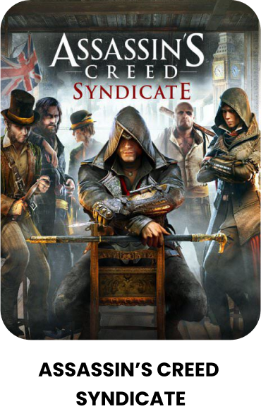
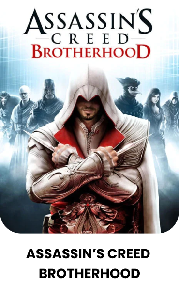

Хронология Assassin's Creed!

В современном мире, образцы ДНК, взятые из тела Дезмонда Майлза после его смерти, позволили Абстерго Индастриз продолжить исследовать его генетические воспоминания, используя вновь обретённые способности облачных вычислений Анимуса. Безымянный персонаж игрока был нанят Абстерго Энтертейнмент из штаб-квартиры в Монреале, чтобы проанализировать воспоминания об Эдварде Кенуэе, пирате восемнадцатого века, отца Хэйтема Кенуэя и деда Коннора. Это проводится как сбор материала для интерактивного художественного фильма на основе Анимуса. На самом деле Абстерго, тамплиеры современности, ищут устройство Первой Цивилизации, известное как Обсерватория, и используют воспоминания Эдварда, чтобы найти её.
В Золотой век пиратства, Эдвард Кенуэй, участвует в заговоре между высокопоставленными тамплиерами в Британской и Испанской империях, которые, прикрываясь антипиратскими действиями в Карибском море, хотят найти Мудреца — позже оказавшегося Бартоломью Робертсом, который является единственным, кто может привести их к Обсерватории, устройству Первой Цивилизации, которое может следить за любым человеком в любой точке мира, когда ему предоставляют образец крови. Тамплиеры намерены использовать Обсерваторию для шпионажа и шантажа мировых лидеров. Эдвард становится невольным участником событий, когда он убивает ассасина-предателя Дункана Уолпола. Видя возможность получить прибыль, Эдвард занимает место Уолпола на встрече тамплиеров в Гаване, где он встречается с Вудсом Роджерсом, а также с губернатором Кубы и магистром тамплиеров Лауреано Торресом. Его безрассудство ставит под угрозу весь Орден Ассасинов. Эдвард же вынужден преследовать Мудреца и заговорщиков с полуострова Юкатан до Ямайки. В конечном итоге, Эдвард настигает Робертса на острове Принсипи у африканского побережья.

Игра продолжается вскоре после событий Assassin’s Creed, где, в 2012 году, Дезмонду Майлсу — пленнику «Абстерго Индастриз», которого используют для дешифрования его генетической памяти о его предке-ассасине Альтаире в машине «Анимус», — грозит смертельная опасность. «Абстерго», современный эквивалент рыцарей-тамплиеров, использовали Дезмонда, чтобы определить местонахождение мощного артефакта, именуемого «Частицей Эдема», или «Яблоком Эдема». Используя Орлиное зрение, полученное в результате «эффекта просачивания» (из-за частого нахождения в «Анимусе»), Дезмонд видит сообщения и символы, написанные кровью на стене его спальни предыдущим испытуемым, именуемым «Объект 16». Люси Стиллман, сотрудник Абстерго и член братства современных ассасинов, освобождает Дезмонда и прячет его в секретном укрытии с двумя другими ассасинами, Шоном Гастингсом и Ребеккой Крэйн, создавшими улучшенную версию «Анимуса». Они предлагают Дезмонду использовать генетическую память о еще одном его предке, итальянце Эцио Аудиторе да Фиренце, с двумя целями: тренировать Дезмонда в искусстве ассасина с помощью эффекта просачивания и найти другие Частицы Эдема.
После погружения в «Анимус» действие игры начинает разворачиваться в Италии, в Эпоху Возрождения, конец XV века. Главным героем игры становится семнадцатилетний юноша по имени Эцио, житель Флоренции. Отца Эцио, Джованни Аудиторе, предал его лучший друг Уберто Альберти, и в результате обвинения отец и братья Эцио — Федерико и Петруччо — были повешены. Для Эцио потеря семьи была сильной душевной травмой. Он убивает предателя своей семьи и скрывается вместе с матерью и сестрой у своего дяди Марио на вилле Аудиторе в Монтериджони.
Позже Эцио узнаёт, что его семью предала семья Пацци, и он решает поквитаться с ней. Сперва он убивает младшего из этой семьи, Вьери Пацци. Через некоторое время после заговора против семьи Медичи Эцио убил отца Вьери, Франческо Пацци. а затем старшего из семьи предателей — Якопо Пацци — и его помощников (хотя, Эцио всего лишь нанёс Якопо последний удар). Из собрания тамплиеров, в котором непосредственно участвовал Якопо, Эцио узнаёт, что следующие действия тамплиеров будут в Венеции.
Действие прерывается и переносится в настоящее время. В ходе интермедии Люси проверяет навыки Дезмонда. Во сне у Дезмонда возникают галлюцинации, и он видит события из жизни Альтаира, главного героя предыдущей части. На следующий день Дезмонд вновь погружается в воспоминания Эцио.

В 2015 году Шон и Ребекка проникают в Лондон в один из офисов «Абстерго», где устанавливают жучки. В то же время они находят информацию о том, что Абстерго просматривает жизнь британских Ассасинов Джейкоба и Иви Фрай, в надежде на то, что они спрятали где-то в Лондоне Плащаницу Эдема. Во время проникновения в другой офис, они встречают Изабель Ардан, и попадают в засаду. Их встречает Отсо Берг и Вайолетт да Коста. Отвлекая тамплиеров взрывом, Шон и Ребекка сбегают. После этого происшествия они по приказу Епископа отсиживаются в укрытии. После того как Посвящённый собрал информацию о Джейкобе и Иви Фрай, и узнали местонахождение Плащаницы, они отправляются в Букингемский дворец. Втроём они обнаруживают группу «Сигма», которая раньше них нашла Плащаницу. Не находя другого выхода, они вступают с ними в схватку. В результате которой Шон нейтрализует Изабель Ардан шокер-клинком, Галина почти нейтрализовала Берга, но на помощь пришёл дополнительный отряд. Ребекка пострадала от выстрела да Косты, прикрывая Шона. Вместе они уходят, так и не взяв с собой Плащаницу.
В центре сюжета прошлого находятся ассасины-близнецы Джейкоб и Иви Фрай, которые прибывают в Лондон, чтобы освободить город от власти тамплиеров. Для этого Джейкоб основывает собственную уличную банду под названием «Грачи» и начинает борьбу с «Висельниками», бандой, контролируемой тамплиерами. В то же время Иви и глава ячейки ассасинов в Лондоне Генри Грин пытаются найти «Плащаницу Эдема», ещё один артефакт Предтеч, которую также хочет заполучить великий магистр Ордена тамплиеров Кроуфорд Старрик. По ходу игры главные герои встретят множество исторических личностей таких как: Чарльз Диккенс, Александр Грейам Белл, Чарльз Дарвин, Карл Маркс, Флоренс Найтингейл, Артур Конан Дойл, Бенджамин Дизраэли, Королева Виктория.

40-летний Эцио Аудиторе да Фиренце поднялся на вершины иерархии ордена ассасинов после окончания событий игры Assassin's Creed II[7]. Действие «Братства» начинается в 1499 году, когда Эцио после разговора с Минервой бежит из Рима вместе со своим дядей Марио Аудиторе. Затем тосканский город, где находилась вилла Аудиторе — Монтериджони (итал. Monteriggioni),— осаждён огромной армией Папской области, усиленной французскими отрядами. Осаду проводит сын папы римского — Чезаре Борджиа. Пушки Борджиа разрушают город, а Чезаре на глазах у Эцио убивает дядю Марио[9]. Проведя уцелевших жителей Монтериджони по катакомбам, Эцио решает отомстить Чезаре и отправляется в Рим. По дороге Эцио теряет сознание, так как во время боя ему прострелили плечо.
Действие игры переносится в 1500 год, где Эцио вынужден организовать и начать развивать «подполье» (в которое входят Римские воры, наёмники, куртизанки, а далее и рекруты-ассасины), когда начинает возрождаться орден, лидером которого формально был Никколо Макиавелли, который после передаёт титул Эцио. На протяжении игры Эцио пытается найти убийц своих родственников и отомстить им, а также вернуть Риму былой мир, порядок и процветание.
В будущем Дезмонд, Люси, Шон и Ребекка прибывают в Монтериджони. Они устраивают укрытие в Святилище под виллой Аудиторе, чтобы тамплиеры не смогли обнаружить их, и продолжают поиски Яблока Эдема, чтобы остановить надвигающуюся катастрофу.
Сам же Эцио при помощи Бартоломео, Ла Вольпе и Клаудии узнаёт, что Яблоко Эдема было передано на изучение учёному, Катерина Сфорца будет в замке Сант-Анджело на следующей неделе, а Чезаре в замке с Папой. Кроме того, Ла Вольпе сообщает, что Макиавелли — предатель и даже показывает его встречу с солдатами Борджиа. Но, доверяя Макиавелли, Эцио просит Ла Вольпе не делать поспешных выводов. После, Эцио проникает в замок и спасает Катерину, но не успевает добраться до Чезаре. Наконец, Эцио решает воссоздать Братство Ассасинов. Тем же вечером с Эцио встречается c Леонардо да Винчи, после чего Леонардо заново создаёт утерянное вооружение Эцио. Оказалось, что учёным, которому передали яблоко, был сам Леонардо, но Родриго забрал его. Да Винчи также сообщает обо всех планах и его изобретениях для армии Чезаре, которые Эцио придётся уничтожить.
С помощью сенатора, посещающего бордель Марии, Эцио узнаёт, где находится кардинал Хуан Борджиа, он же Банкир. С его смертью Чезаре лишается средств на войну. Затем Эцио и Бартоломео проникают в лагерь французов и убивают барона Валуа. Наконец, Эцио спасает жизнь актёру Пьетро, который в тайне от Чезаре встречается с Лукрецией. Разузнавший об этом Чезаре приказал Микилетто отравить его — Эцио нейтрализует Микилетто, но не убивает его и спасает актёра, а взамен получает ключ от запасного входа в замок Сант-Анджело. Тем же вечером Эцио встречает вора с повязкой на правом глазу, того самого, который участвовал во время битвы за Монтериджони. Выясняется, что предатель — он, а не Макиавелли. Эцио убивает предателя и находит Ла Вольпе, который уже собирается убить Макиавелли, и сообщает о том, что узнал, предоставив письмо, которое он взял у вора.
По ходу действия, Дезмонд через Эцио находит глифы Объекта 16, в которых обнаруживаются доказательства заговора «Абстерго». Помимо этого, сам Дезмонд находит в Монтериджони несколько утерянных во время осады города вещей.